Classic men's cut
Timeless cut tailored to your style — clean finish, precise lines, and professional styling from start to finish.
Book this cut →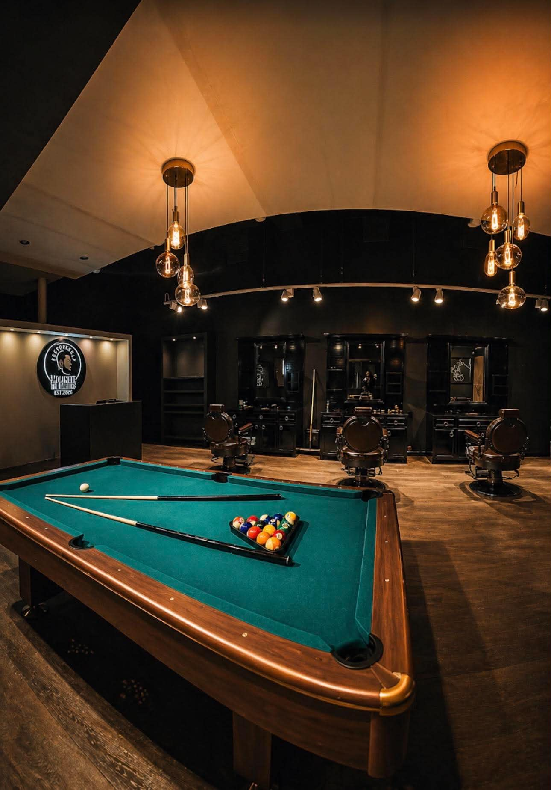
Sjøgata 20 · Bodø, Norway
Fades, classic cuts and beard work from a barber with 25 years behind the chair — in a calm, unhurried room built for conversation as much as the cut.
What we offer
Timeless cut tailored to your style — clean finish, precise lines, and professional styling from start to finish.
Book this cut →Seamless gradient from skin to length — sharp, modern, and built for a crisp, lasting look.
Book this cut →One length across the entire beard with a soft blend into the sideburns. Clean, natural and symmetrical, machine only.
Book this cut →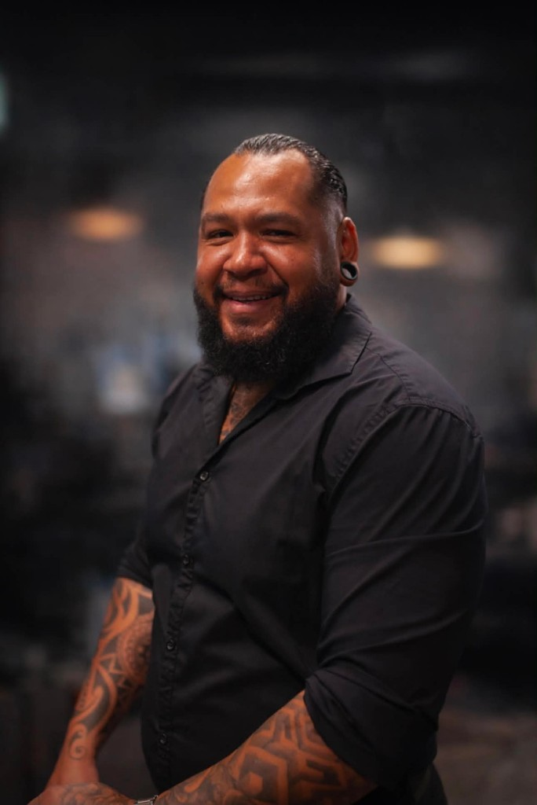
The barber
My name is Félix Molinett, and I have been working as a barber for around 25 years. For me, barbering has always been more than just a profession — it is a craft built on precision, trust, and connection.
My journey has taken me through Venezuela, Spain, the Netherlands, Kuwait, Malta, Switzerland, and now Norway. Working in different countries has given me the opportunity to meet people from many cultures, understand different styles, and constantly improve my work.
I believe a great haircut is not only about technique. It is about listening, understanding each client's personality, and creating a style that makes them feel confident.
Opening Molinett The Barber's in Bodø has been one of the biggest goals of my life — years of experience, hard work and the decision to build something that truly reflects who I am. After facing physical challenges that kept me away from work for a period, I chose to start over and build something better.
My goal is simple: every client should leave looking sharp, feeling confident, and looking forward to their next visit.
"I look forward to welcoming you personally to Molinett The Barber's."
Félix MolinettFounder, Molinett The Barber's
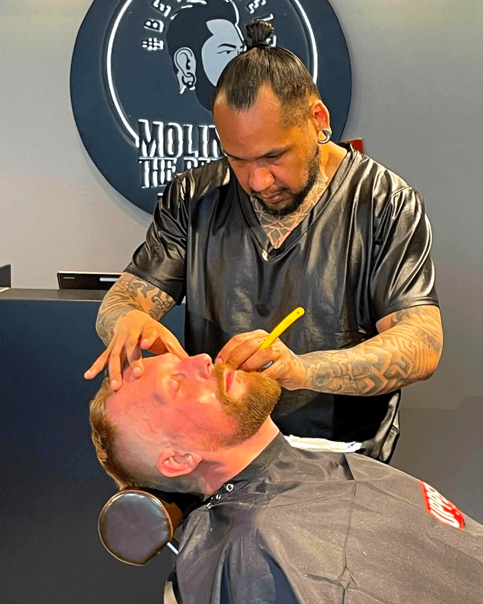
Why Molinett
For Félix, barbering has never been just about cutting hair. It's about creating a place where people can slow down, leave the noise outside, and walk away feeling like the best version of themselves.
Trusted in Bodø
"I first met Molinett when he was cutting hair in Switzerland, and from my very first appointment everything was great. The haircut, the care, the overall service, everything was on point. Even the conversations were enjoyable from the beginning, and over time they only got better."
Melhid Jusufi · Google review
"Great haircut — exactly what I asked for."
Tobias R. · Google review
"Calm and comfortable atmosphere. Will come back."
Jonas M. · Google review
"Very good service and friendly staff."
Erik S. · Google review
Reviews sourced from Google.
Real results
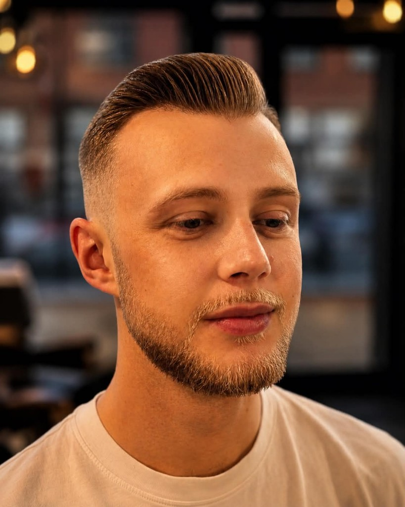
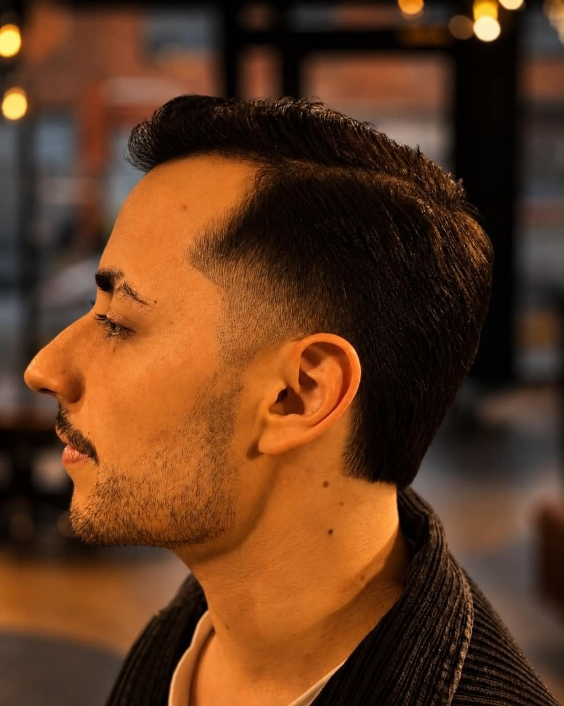
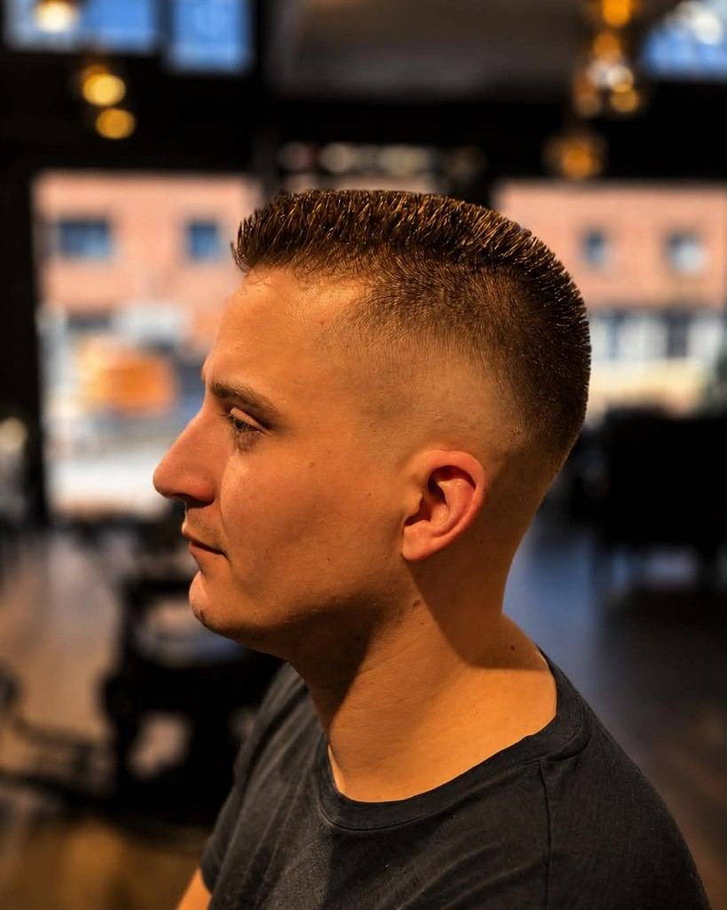
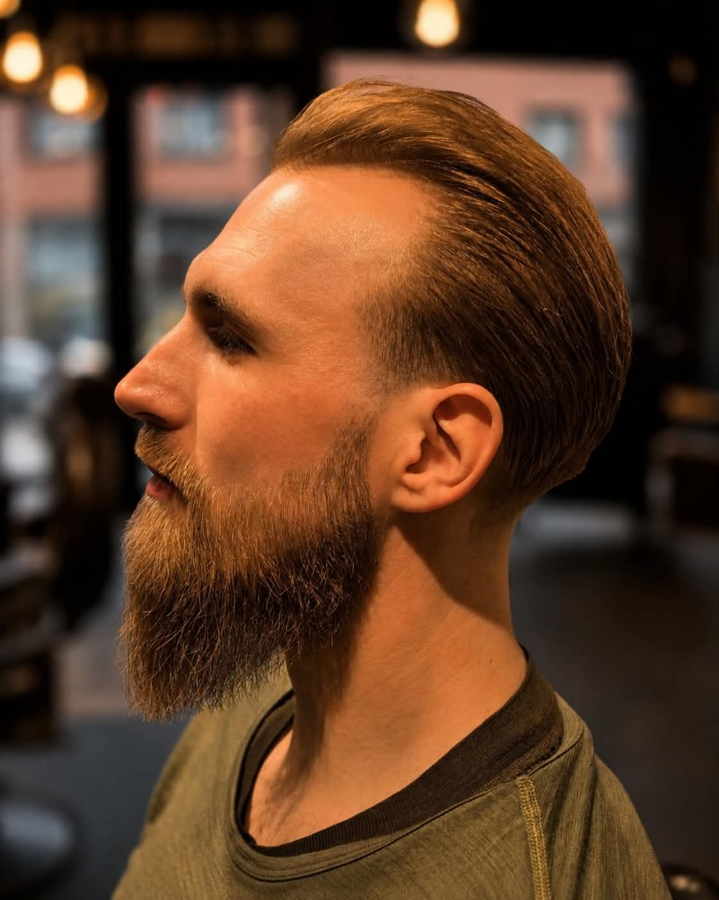
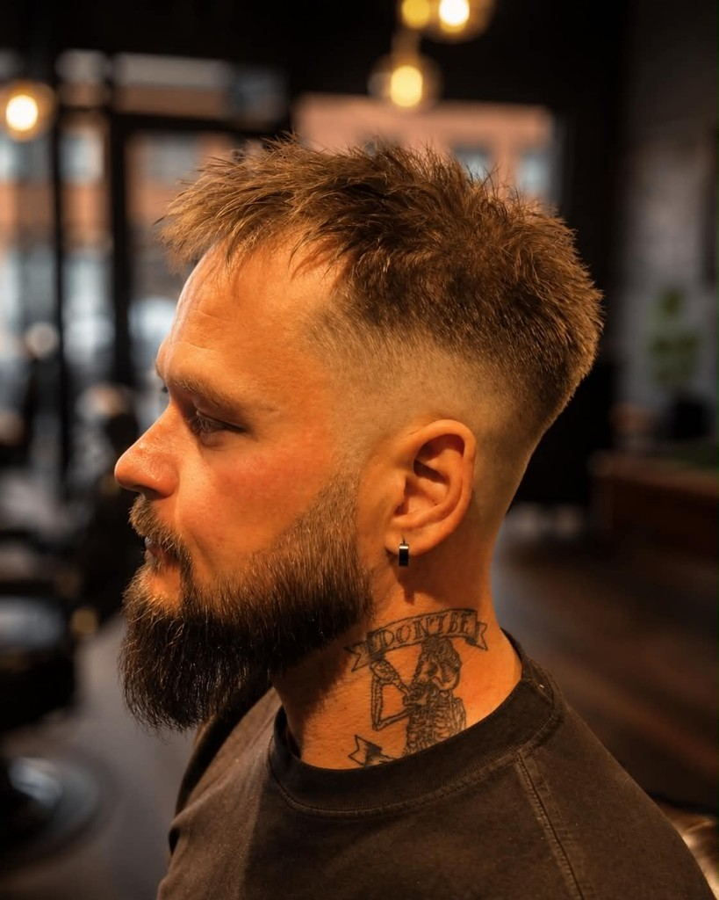
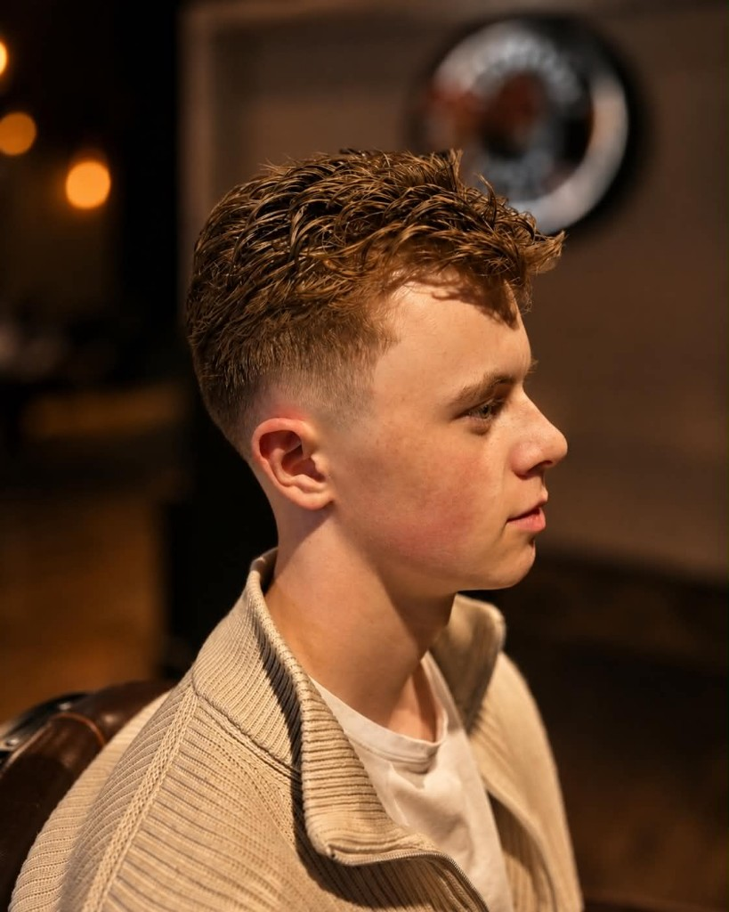
The shop
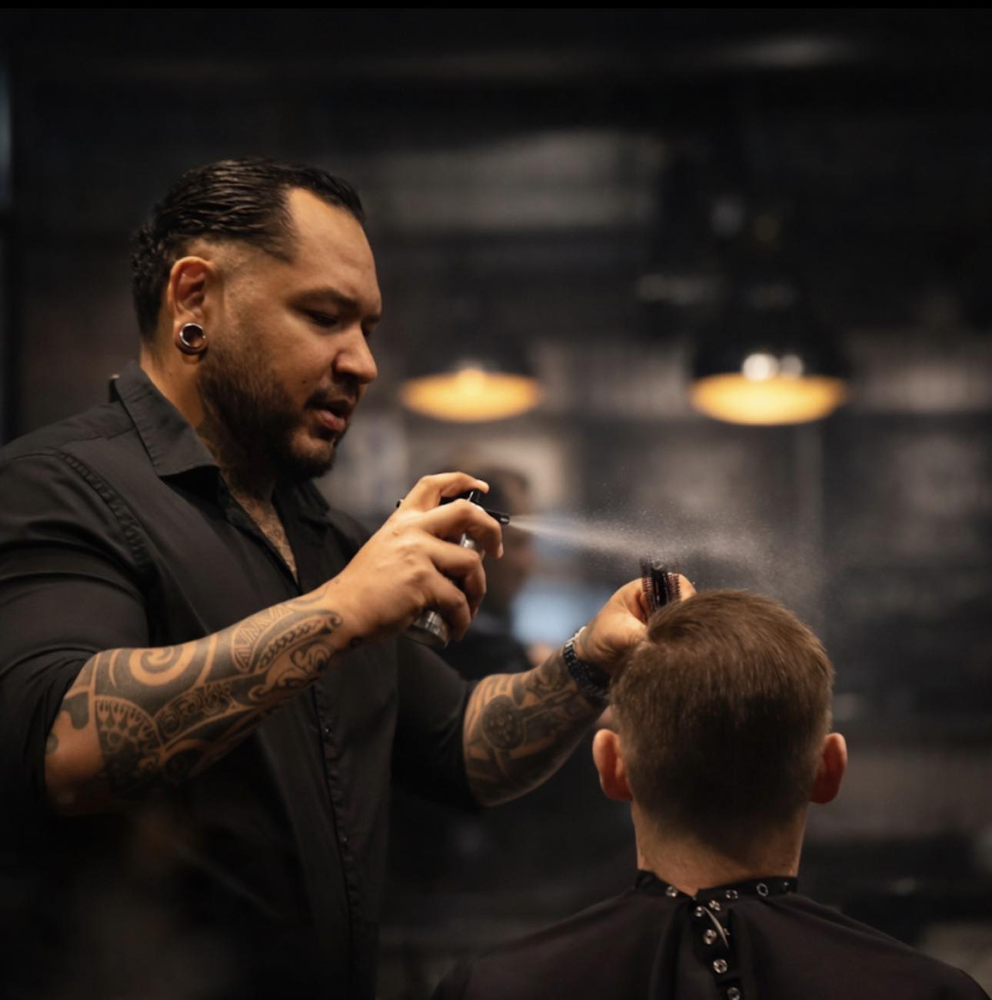
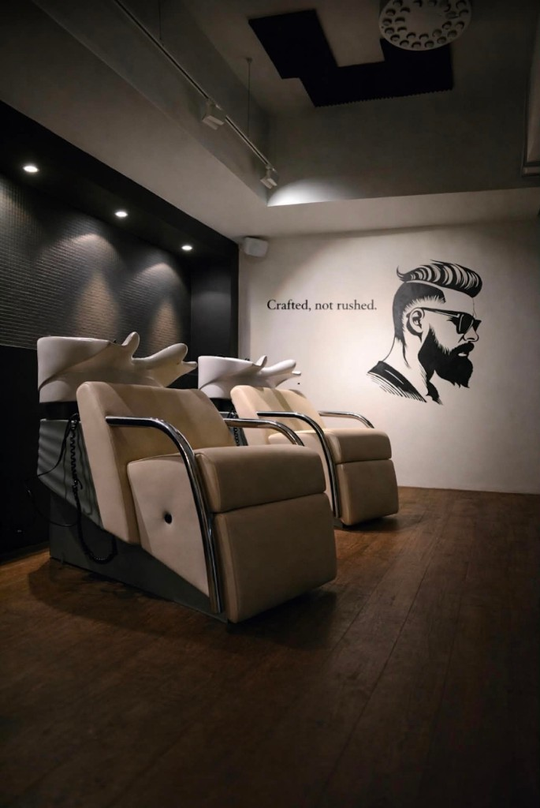
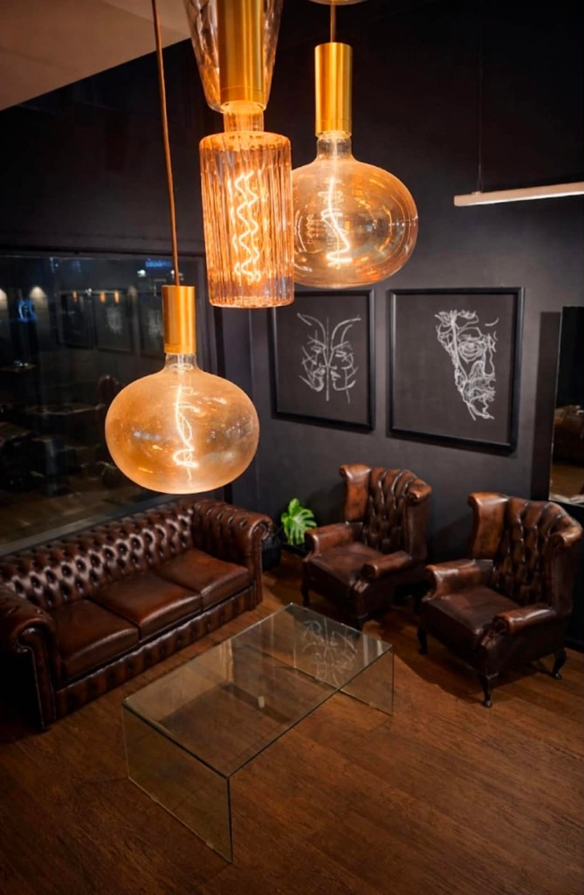
Find us
Walk-ins welcome during opening hours.
Book a chair